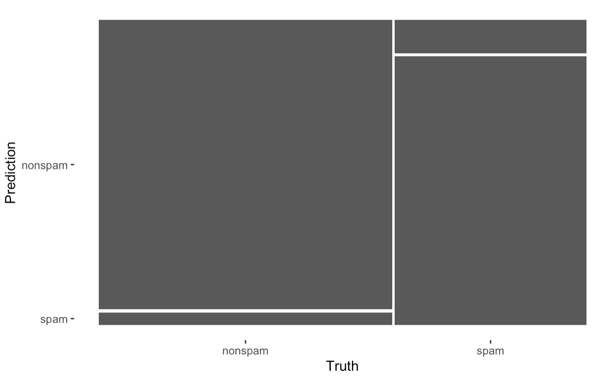

library(caret); library(kernlab); data(spam)
inTrain <- createDataPartition(y=spam$type,
p=0.75, list=FALSE)
training <- spam[inTrain,]
testing <- spam[-inTrain,]
# dim(training)
set.seed(32343)
modelFit <- train(type ~.,data=training, method="glm")
# modelFit
predictions <- predict(modelFit,newdata=testing)
# predictions
cm <- confusionMatrix(predictions,testing$type)
cm
plot(cm$table,main="Table")Predictive modeling
modeling
Predictive modeling comparison in R using caret and tidymodels for preprocessing, resampling, training, and model evaluation.
Overview
This post is dedicated to make a comparison between Caret and TidyModels R packages. Data modelling with R pass through data preprocessing and parameters assessments to predicting an outcome. Both set of packages can be used to achieve same results, with the purpose of finding the best predictive performance for data specific models.

The Caret package is the starting point for understanding how to manage models and produce unbiases predictions with R. As well as TidyModels meta package, it gives the opportunity to contruct a multivariate model syntax to manage several models to be applied on same set of data. TidyModels allows the use of a set of concatenated functions in partership with the TidyVerse grammar to build a structural model base which blends different models as one global model.
The following is an attempt to a comparison between the two predictive model structures.
Caret package
The most important functions for this package, grouped by steps to modeling, are:
Preprocessing (data cleaning/wrangling)
- preProcess()
Data splitting and resampling
- createDataPartition()
createResample()
createTimeSlices()
Model fit and prediction
- train()
- predict()
Model comparison
- confusionMatrix()
TidyModels meta package
This “meta package” is made of a set of packages for modeling, with the support of other well known packages for data manipulation and visualization such as broom, dplyr, ggplot2, purrr, infer, modeldata, and tibble; it includes:
- recipes (a preprocessor)
- rsample (for resampling)
- parsnip (model syntax)
- tune and dials (optimization of hyperparameters)
- workflows and workflowsets (combine pre-processing steps and models)
- yardstick (for evaluating models)
The most important functions for this meta package, grouped by steps to modeling, are:
Preprocessing (data cleaning/wrangling)
recipes::recipe()
recipes::step_
()
Data splitting and resampling
rsample::initial_split()
rsample::training()
rsample::testing()
rsample::bootstraps()
rsample::vfold_cv()
tune::control_resamples()
Model fit and prediction
parsnip::
() %>% set_mode() %>% set_engine() parsnip::extract_fit_engine()
parsnip::extract_fit_parsnip()
parsnip::fit() stats::predict()
tune::fit_resamples()
Model workflow
workflows::workflow() %>% add_model()
workflows::add_formula()
workflows::add_recipe()
parsnip::fit()
stats::predict()
workflows::update_formula()
workflows::add_variables() / remove_variables()
workflowsets::workflow_set()
workflowsets::workflow_map()
workflowsets/tune::extract_workflow() / extract_recipe() / extract_fit_parsnip()
tune::last_fit()
workflowsets/tune::collect_metrics()
workflowsets/tune::collect_predictions()
Model comparison
yardstick::conf_mat()
yardstick::accuracy()
yardstick::metric_set()
yardstick::roc_curve()
yardstick::roc_auc()
yardstick::sensitivity()
Machine learning algorithms in R
- Linear discriminant analysis
- Regression
- Naive Bayes
- Support vector machines
- Classification and regression trees
- Random forests
- Boosting
- etc.
Resource: Practical Machine Learning
Caret or TidyModels?
Caret Example with SPAM Data
TidyModels Example with SPAM Data
library(tidymodels)
tidymodels_prefer()
set.seed(123)
split <- initial_split(spam,0.75,strata=type)
training <- training(split)
testing <- testing(split)
modelFit <- logistic_reg() %>%
set_engine("glm") %>%
fit(type~.,data=spam)
# tidy(modelFit)
predictions <- predict(modelFit,new_data=testing)
# predictions
testing$pred <- predictions$.pred_class
cm <- yardstick::conf_mat(data = testing, truth = type, estimate = pred)
cm
autoplot(cm)